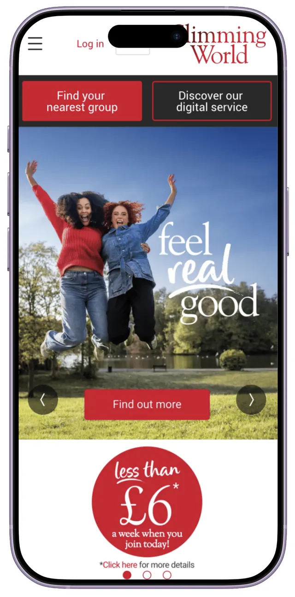

01 — The goalHelping people find the right group
Redesign the group search and enrolment journey to help prospective members find the right group with confidence, while creating stronger connections between members and Consultants through improved communication and clearer information.
02 — ObjectivesResearch objectives
- 01Improve our group search based on location.
- 02Allow members to enrol for the group service digitally.
- 03Set the groundwork for potential members to pay for a group subscription online.
- 04Optimise our search engine performance to pull in more potential members.
- 05Show potential members more before they join, so they understand what to expect in group and which Consultant might suit them best.
- 06Mirror the web group search experience in the app.
- 07Track potential members at every stage of the group search conversion funnel.
03 — Pain pointsThe current journey
I reviewed each page of the existing group search journey, noting what already works and where there are opportunities to improve.

The homepage
Strengths
- A clear call to action to search for a group.
- Digital Insights data shows 13% of sessions start on this page, with the nearest group search.
Opportunities
- Include information about groups: what they are and the benefits they bring.
- "Use my location" isn't very visible.
- Search only works by postcode. Include street, town and other place names.
- Add predictive search.
Next case study →
Exploring digital coaching for weight management